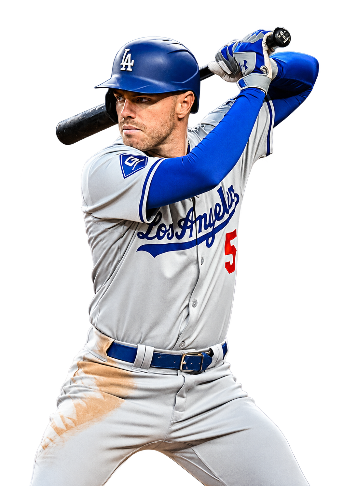
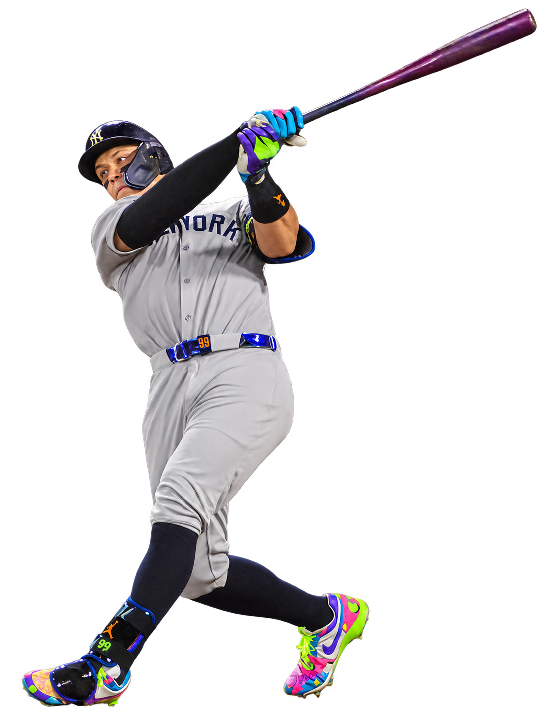
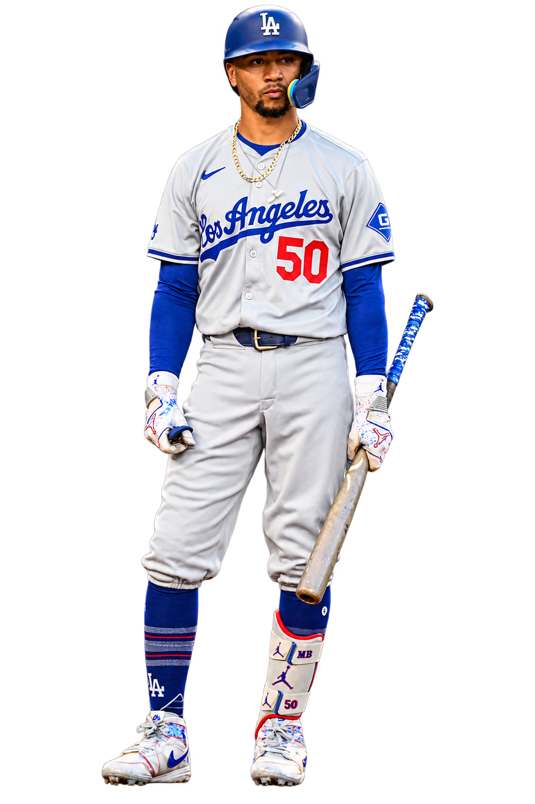
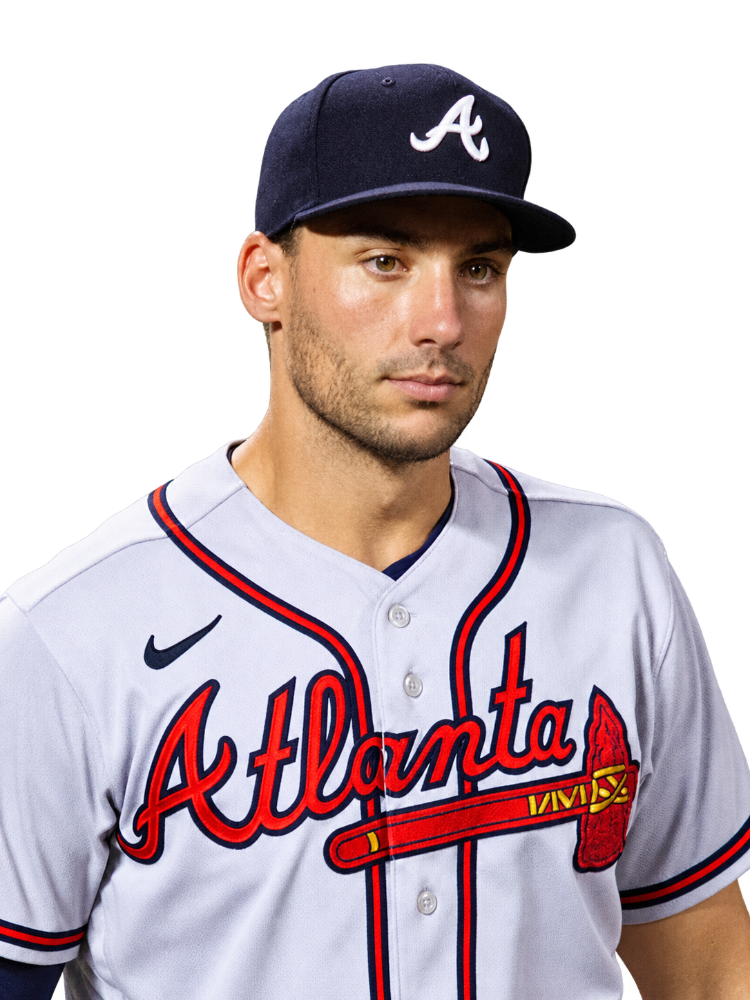
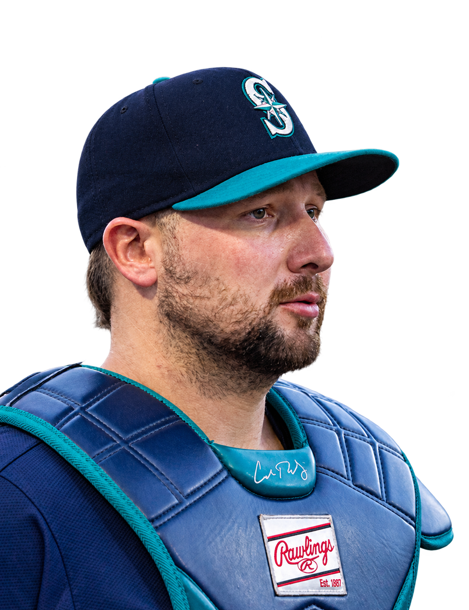

← The BoardPlayer photo credits
Transparent cutouts are adapted from the credited photographs. Each derivative retains its source license. MLB headshots and team logos are served by MLB.

Freddie Freeman
Photo: All-Pro Reels from District of Columbia, USA · Original photograph · CC BY-SA 2.0
Background removed with built-in imagegen, preserving identity, pose and uniform. CSS supplies the bottom fade. Derivative retains source license.

Aaron Judge
Photo: Johnmaxmena2 · Original photograph · CC BY 4.0
Background removed with the built-in imagegen tool; displayed with a CSS crop and bottom fade. Derived artwork retains the source license.

Mookie Betts
Photo: Joe Glorioso / All-Pro Reels · Original photograph · CC BY-SA 2.0
Background removed with the built-in imagegen tool; displayed with a CSS crop and bottom fade. Derived artwork retains the source license.

Matt Olson
Photo: D. Benjamin Miller · Original photograph · CC0
Background removed with built-in imagegen, preserving identity, pose and uniform. CSS supplies the bottom fade. Derivative retains source license.

Cal Raleigh
Photo: Arc1294 · Original photograph · CC BY 4.0
Background removed with built-in imagegen, preserving identity, pose and uniform. CSS supplies the bottom fade. Derivative retains source license.
{kind=link}
.png){kind=link}
.jpg){kind=link}
.jpg){kind=link}
{kind=link}